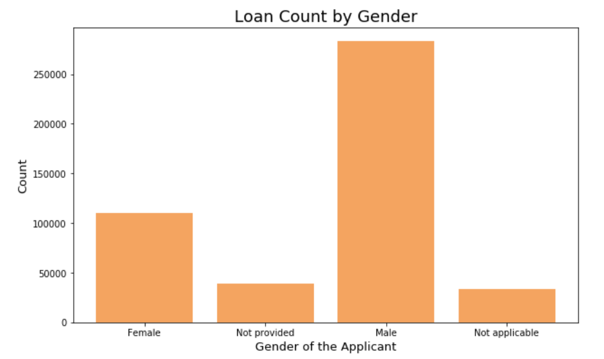
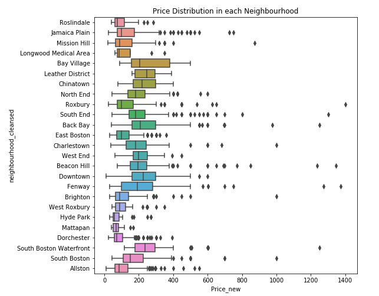
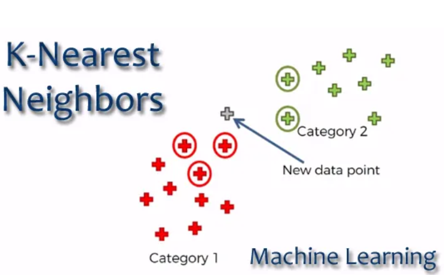
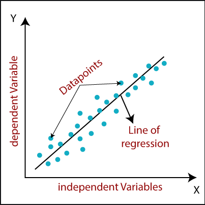
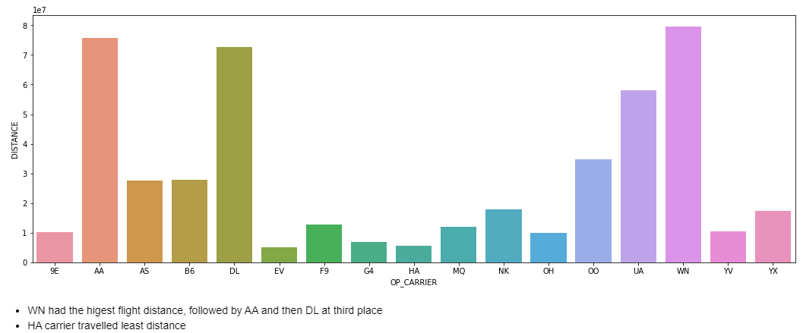
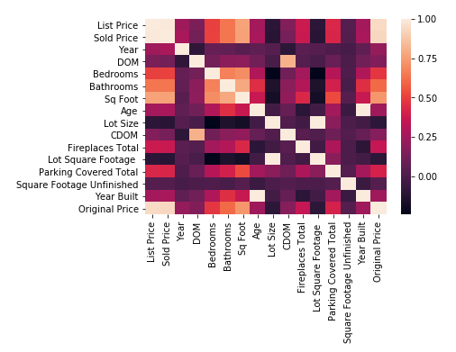

This analysis focuses on the cleaning, and data visualization of the key insights from the loan data. Performed exploratory data analysis in Python
Skills used : Python, Data Visualization using matplotlib and seaborn, Pandas in Python, SQL
From the analysis link below, open the .pynb notebook

This analysis focuses on the cleaning, and data visualization of the key insights from Airbnb data. Performed exploratory data analysis in Python
Skills used : Python, Data Visualization using matplotlib and seaborn, Pandas in Python
From the analysis link below, open the .pynb notebook

Implemented K-Nearest Neighbors ML algorithm from scratch using python code (no libraries), this helps to understand the basics of a concept rather than just using them on problems
Skills used : Python, Machine Learning
From the Implementation link below, open the KNN.pynb notebook

Implemented linear regression supervised ML algorithm from scratch using python code (no libraries), this helps to understand the basics of a concept rather than just using them on problems
Skills used : Python, Machine Learning
From the Implementation link below, open the linear regression_scratch.pynb notebook

Implemented a ML model in python which predicts the flight delays
Skills used : Python, Machine Learning, Statistical Modelling, Data Cleaning and Data Visualization
From the analysis link below, open the FlightDelay.pynb notebook

Implemented a ML model in python which predicts the house prices in a Washington city
Skills used : Python, Machine Learning, Statistical Modelling, Data Cleaning and Data Visualization
From the analysis link below, open the House_price_prediction.pynb notebook